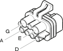

D004B Front/engine junction ( ENGINE )
- Path
- Electrical equipment > 3 Connectors > D Intermediate couplings > D4 Front/engine junction > D004B Front/engine junction ( ENGINE )
- Kind
- connector pinout (pin -> wire colour -> other end)
- Applies to
- engines: 1.9 JTD 8V; all production periods
- Interactive page
- https://sloeber94.github.io/elrnDB-fMltpl/en/#/2890021
Applies to: engines: 1.9 JTD 8V; all production periods

Wiring | Colour |
|---|---|
NERO (black) |
Topics linked from this page (7)
- 50 ENGINE
- A020B Starter motor ( ENGINE )
- C60 Earth on engine
- J10 Fuel injection main relay
- M010B Engine management ECU ( ENGINE )
- M010C Engine management ECU ( ENGINE )
- M010D Engine management ECU ( ENGINE )
Topics that link to this page (41)
- A020B Starter motor ( ENGINE )
- B005E MAXI FUSE box ( FRONT )
- B035 Injection memory and CODE fuse ( FRONT )
- B035 Injection memory and CODE fuse ( FRONT )
- C060 Earth on engine ( FRONT )
- C062 Methane injection control unit earth ( FRONT )
- C063 GPL injection control unit earth ( FRONT )
- H001A Ignition switch ( FRONT )
- J010 Fuel injection main relay ( ENGINE )
- J015 Fuel pump relay ( FRONT )
- J020 Air conditioning compressor activation relay (FRONT)
- J024 GPL solenoid valve relay ( FRONT )
- J026 Methane/LPG relay feed ( FRONT )
- J027 Petrol cut out relay ( FRONT )
- J027 Petrol cut out relay ( FRONT )
- K005 3 stage pressure switch (FRONT)
- K043 Integrated air temperature sensor ( ENGINE )
- K046 RPM sensor ( ENGINE )
- K047 Timing sensor ( ENGINE )
- K054 Methane pressure sensor (FRONT)
- K054 Methane pressure sensor (FRONT)
- K056 Throttle position sensor ( ENGINE )
- K057 Methane pressure and temperature sensor (ENGINE)
- K057 Methane pressure and temperature sensor (ENGINE)
- M010A Engine management ECU ( FRONT )
- M010A Engine management ECU (FRONT)
- M010B Engine management ECU ( ENGINE )
- M010B Engine management ECU ( ENGINE )
- M018A GPL control unit ( FRONT )
- M018B GPL control unit ( FRONT )
- M019A Methane injection control unit (FRONT)
- M019A Methane injection control unit (FRONT)
- M019B Methane injection control unit ( FRONT )
- N072A Methane injector ( ENGINE )
- N072B Methane injector ( ENGINE )
- N072C Methane injector ( ENGINE )
- N072D Methane injector ( ENGINE )
- N073A GPL injector ( ENGINE )
- N073B GPL injector ( ENGINE )
- N073C GPL injector ( ENGINE )
- N073D GPL injector ( ENGINE )